In this assignment, you will polish how everything looks and feels.
Download this package and import it into Unity.
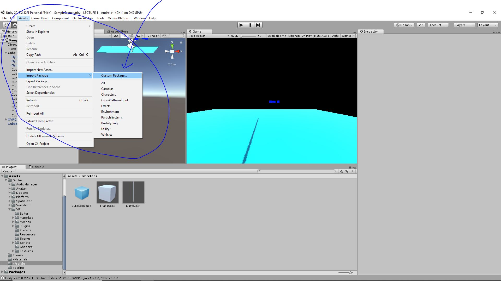Adjust materials to match. Take the BlueGlow.mat material from the package and put it on all your cubes.
If you're using your own materials, you'll want to make the Cube Explosion match. See second photo below.
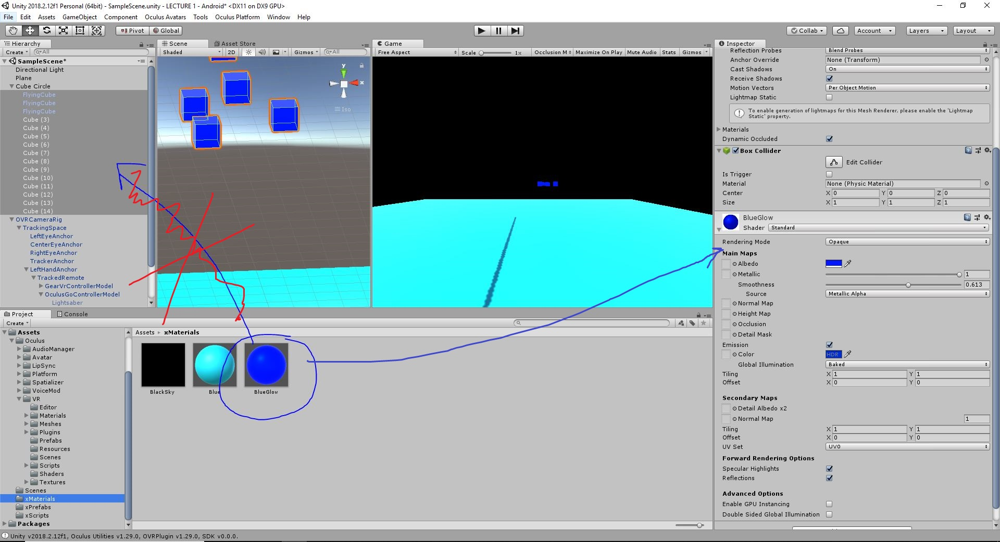If you're using your own materials, select the CubeExplosion prefab and go to Particle System -> Renderer -> Material and select the same material as the one on your cubes:
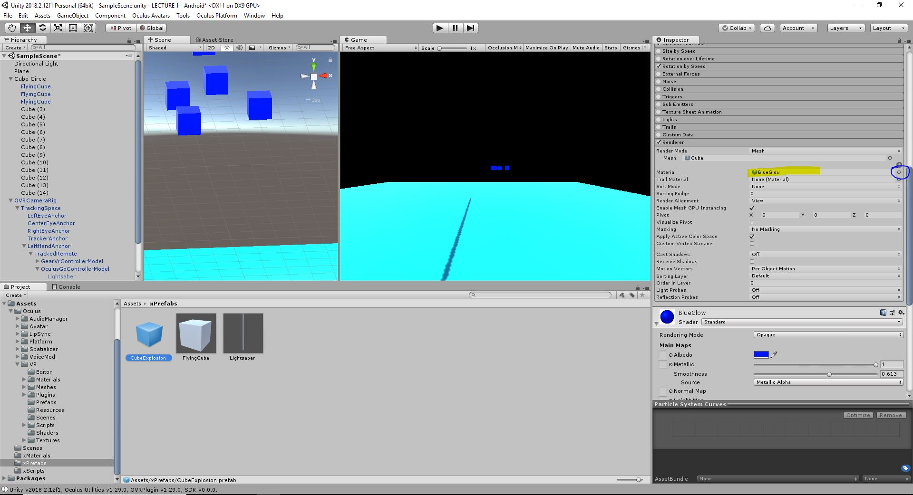
Edit your SaberControl script to contain a private GameObject cubeExplosionPrefab.
Remember to use [SerializeField] to expose the field in the inspector.
Then, use Instantiate to spawn it when we destroy our cubes.
Instantiate takes in a GameObject (either a Prefab from Project or an existing GameObject in the scene) and creates a copy of it in the scene.
Go into your Projects -> Assets -> xPrefabs and select the Lightsaber prefab. Drag the CubeExplosion prefab onto the slot in SaberControl.
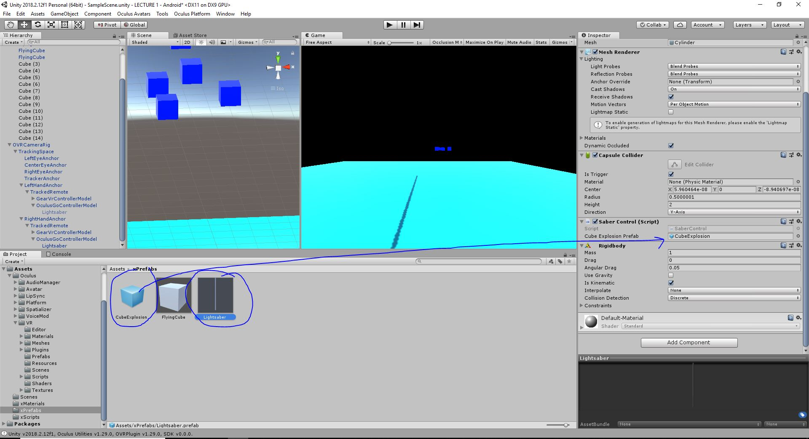HW QUESTION: Why does editing the prefab make the lightsabers in the scene work automatically?
Build to the Go and smash some cubes! (or test locally by enabling the OculusGoController after hitting play)
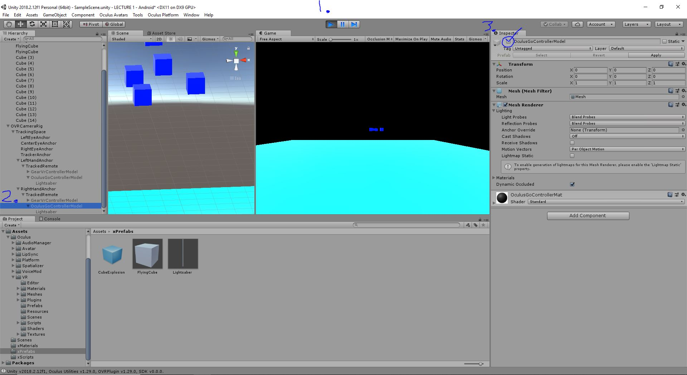Go to OVRCameraRig -> TrackingSpace -> CenterEyeAnchor and set ClearFlags to solid color in the inspector. Choose Black from the color picker.
Having a black background will make it feel more polished.
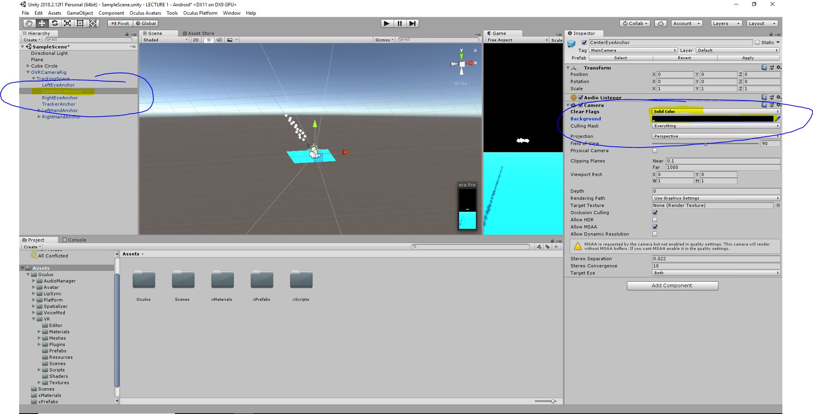
Download a song of your choosing, or use this dubstep song. More free songs here.
Download this lightsaber swinging noise by gyzhor.
Download this lightsaber slashing noise by reesewong8.
Create a folder in Project Assets called "xAudio" and put these files in that folder.
You're going to create a "Audio Source," which is a Unity component for playing sounds. The easiest thing to do when adding background music is to create a new object to hold it. Select TrackingSpace and right click it and hit Create Empty. Name it MusicObject.
Audio sources are spatialized which means an audio source's transform affects how it sounds. If an audio source is to the right of the camera, the sound will play more strongly out of your right headphone.
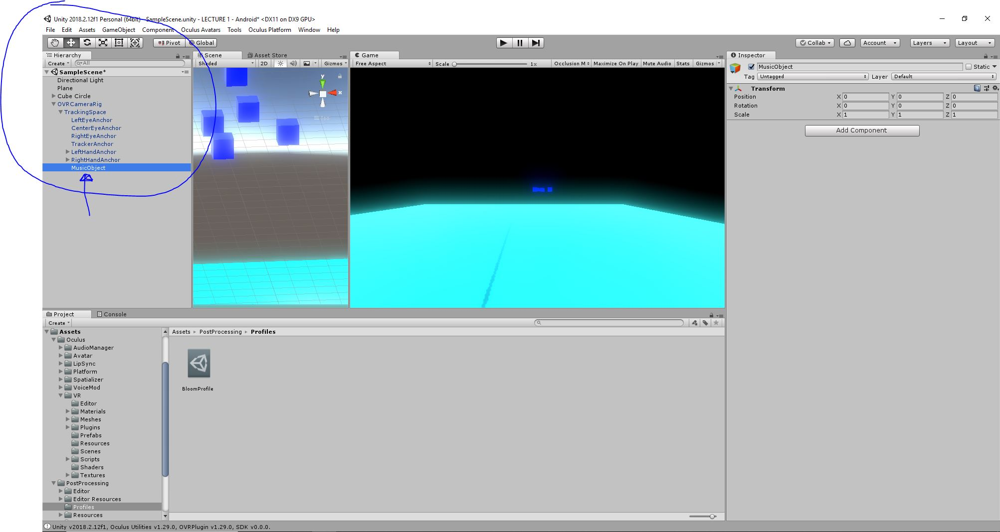Now add an audio source by clicking Add Component and typing in Audio Source.
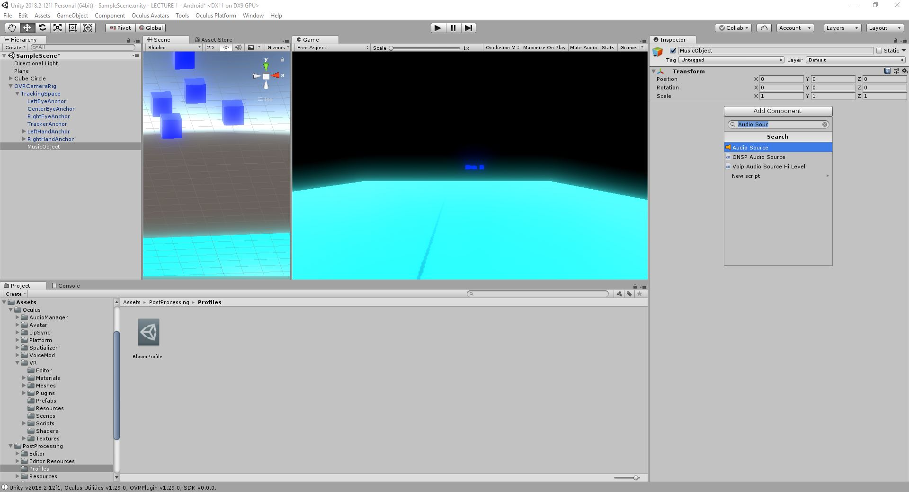In the Project naviate to Assets -> xAudio if you aren't already there, and drag the music file into the AudioClip slot of the Audio Source.
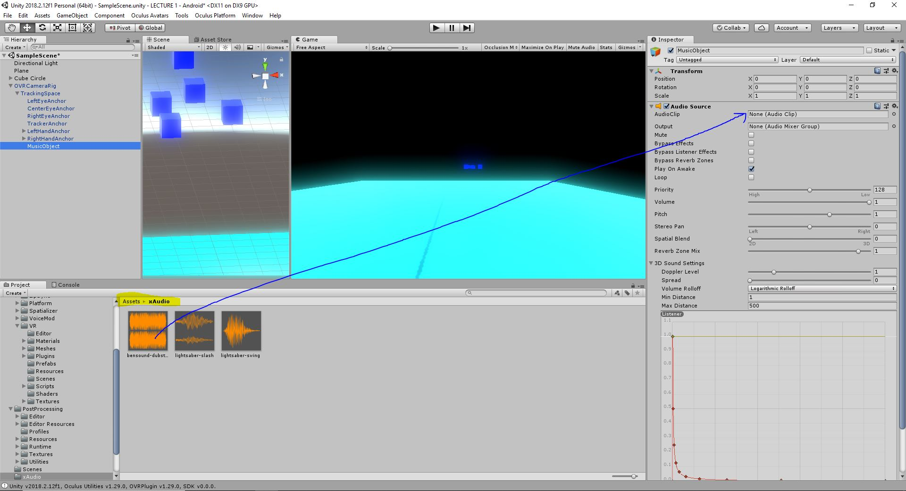Hit play and hear the music playing!
In order for your cubes to move at the same speed in the editor as in headset, add this little bit to your SaberControl. You'll want to change
your speed to around 8 in the inspector.
Update() runs every frame. However, the framerate on the Oculus Go is different from the framerate on your computer.
This is because the Oculus Go has a slower processor and therefore a lower FPS. Using Time.deltaTime scales the motion
based on time elapsed instead of framerate.
HW QUESTION: In your own words, why would the cubes move at a slower speed in the headset than in the editor if we didn't implement this fix?
Take some time to adjust your cubes to the music. Highly advise that you take the time here to delete all your cubes except one, make that one a prefab, and use a prefab for all the other cubes.
HW QUESTION: Why would you want to make your cubes into prefabs?
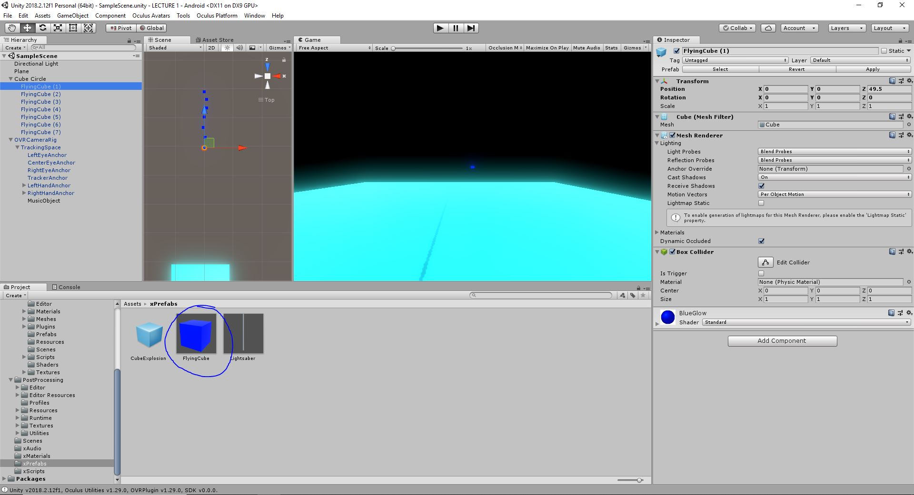If you can't hear the music, hit the Oculus button and quit to open the Oculus Home. Go to Library -> Unknown Sources and then click the one you installed on the Go.
Start by adjusting small fixes. Click on the plane and remove the collider from the floor by right clicking the mesh collider and hitting Remove Component. This way, we won't destroy the floor anymore.
Go ahead and give the lightsaber a cool color. I chose purple.
If you have time, we'll add even more sounds. Open up SaberControl and let's add some more sound effects.
Go into the Assets -> xPrefabs and click on the Lightsaber prefab. Add an AudioSource and uncheck the PlayOnAwake box. Then navigate to xAudio. Drag the correct audio clips from Assets -> xAudio into the SaberControl audio clip slots.
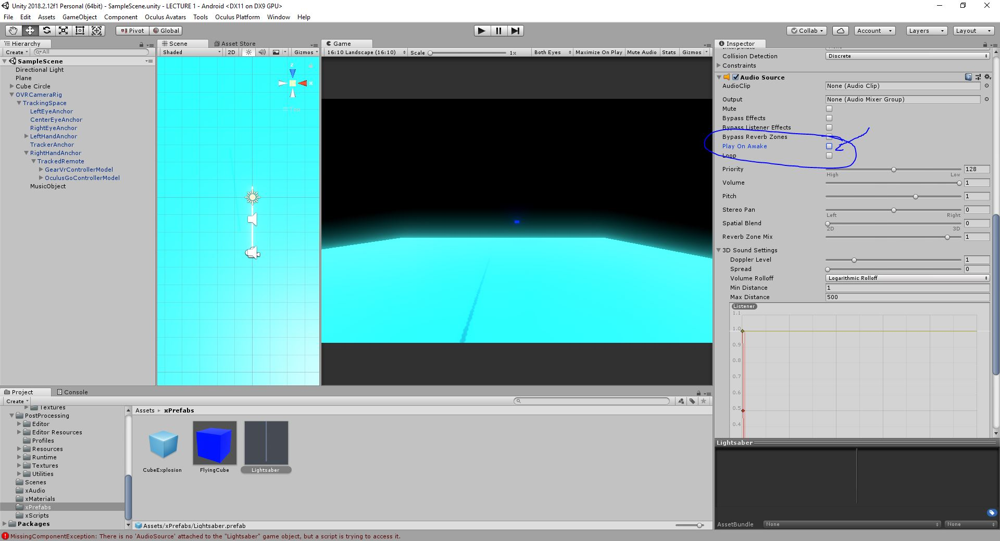Then navigate to xAudio. Drag the correct audio clips from Assets -> xAudio into the SaberControl audio clip slots.
Go into SaberControl and add this line of code, so that smashing the cubes makes a noise.
Also in SaberControl, add these lines of code, so that swinging the saber around makes a noise.
Go to the Asset Store and look up Unity Post Processing Stack. Download and import it.
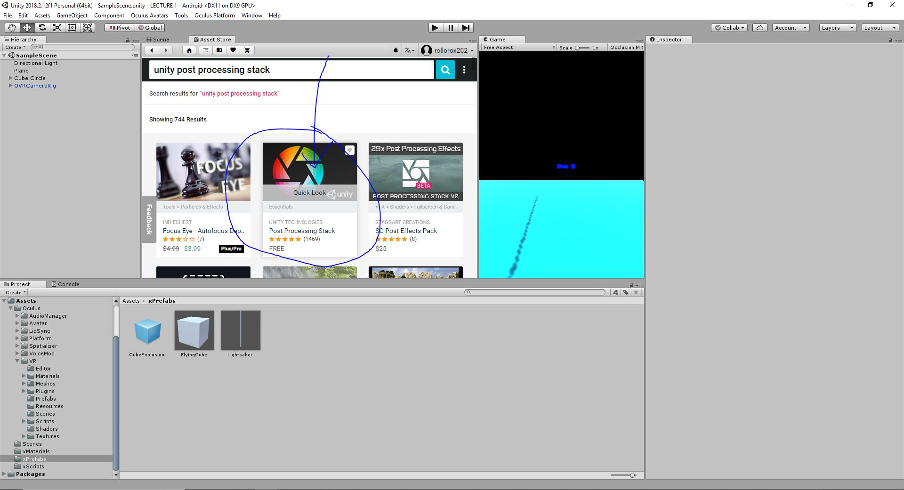Go to the OVRCameraRig --> TrackingSpace --> CenterEyeAnchor and click Add Component. Type in "Post Processing" and select "Post Processing Behaviour" when it shows up.
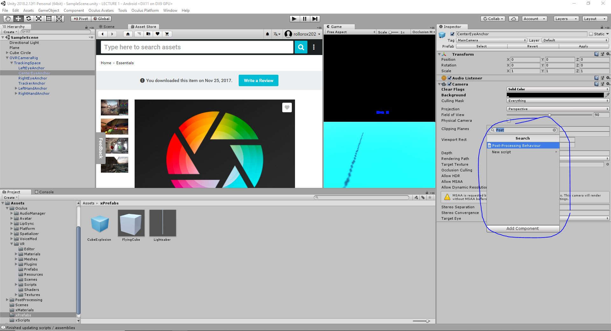In the Project view, make sure you go into PostProcessing. Right click and create a new folder called "Profiles."
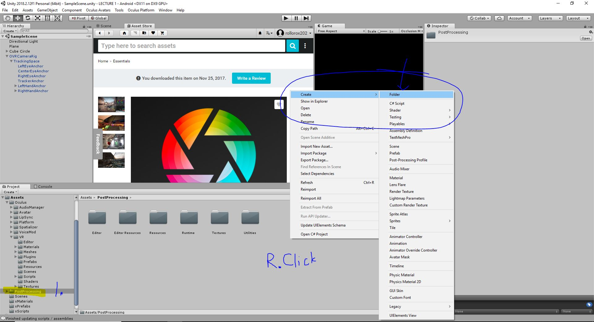Go into that folder and create a new profile by right clicking and selecting Create --> Post Processing Profile. Name your profile "BloomProfile."
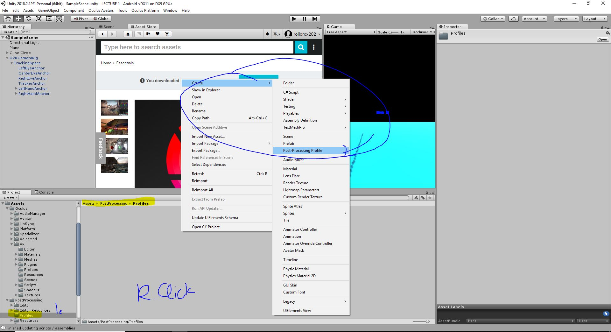Select the BloomProfile and check the dot next to "Bloom." Set the Threshold to 0.7. More about bloom and post-processing here.
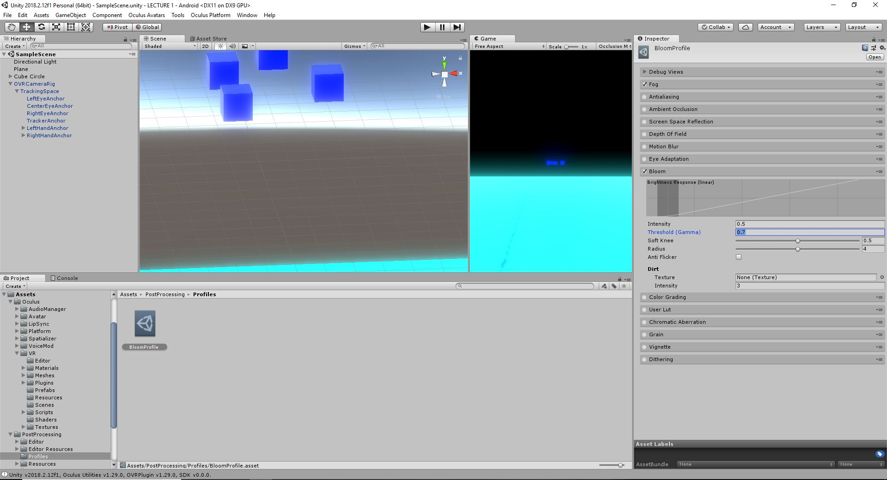
Select OVRCameraRig --> TrackingSpace --> CenterEyeAnchor and drag the BloomProfile into the empty slot on the PostProcessingBehaviour.
The scene should have a soft glow around the bright objects! If you build, it'll take a while to package all the post-processing shader variants, but it's worth it.
Assignment written by Khoi Le, Ethan Aldrich and Connor Settle, October 2018 with contributions from Jerry Meng.